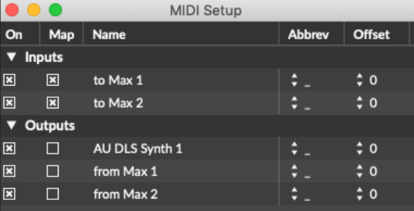
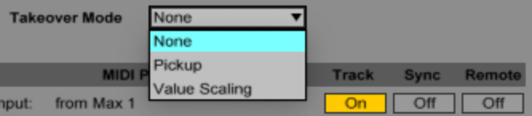
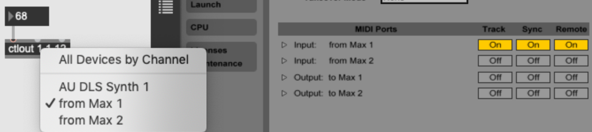
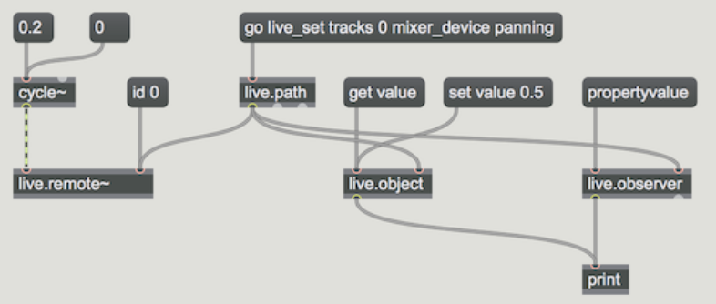

class: center, middle .title[Interactive Music Systems] <br/><br/> .subtitle[The Max for Live API] <br/><br/><br/><br/><br/><br/> .date[Oct 2025] <br/><br/><br/> .note[Created with [Liminal](https://github.com/jonathanlilly/liminal) using [Remark.js](http://remarkjs.com/) + [Markdown](https://github.com/adam-p/markdown-here/wiki/Markdown-Cheatsheet) + [KaTeX](https://katex.org)] ??? Author: Grigore Burloiu, UNATC --- name: toc class: left # ★ Table of Contents ★ <!-- omit in toc --> 1. [Review](#review) 2. [Controlling Ableton](#controlling-ableton) 3. [The Live API](#the-live-api) 4. [Example](#example) 5. [Assignment](#assignment) <!-- Comment out the next slide if you don't want the Table of Contents link --> --- layout: true .toc[[★](#toc)] --- name: review # Review Tools - [Max](02-01-max-unity-intro) - [Ableton Live](04-02-interactive-devices#ableton-live) - [HCI and OSC](01-07-osc) -- .right-column[ <iframe width="100%" height="300" src="https://www.youtube.com/embed/qmJrMAcPxhw?start=1690" title="YouTube video player" frameborder="0" allow="accelerometer; autoplay; clipboard-write; encrypted-media; gyroscope; picture-in-picture" allowfullscreen></iframe> ] Technique - mapping and control - sound / sonification design - IMS: analysis + reaction --- ## Max for Live devices automation - `[live.*]` parameter objects - inspector - parameter - visibility - Automated and Stored local naming - use `---` before names of `send` `receive` `buffer~` etc to keep them local - (similar to `#0` in classic Max) open in presentation - right-click on patcher - inspector window - basic distribution: [freezing devices](https://docs.cycling74.com/userguide/m4l/live_freezing/) - [unfreezing creates a new copy](https://steinkamp.us/posts/2022-04-14-max-tips) - don't unfreeze! rather, keep your `dev/` folder separate and freeze for distribution + Save As to a `release/` folder - Ableton's [m4l production guidelines](https://github.com/Ableton/maxdevtools/blob/main/m4l-production-guidelines/m4l-production-guidelines.md) - Ableton's [building Max Devices Tour](https://www.youtube.com/watch?v=__R9P0ZOLbU&list=PLoh4MB-kbBmI1pXYI4M1jX2_5xpMNS-g-) videos - [reddit workflow discussion](https://www.reddit.com/r/ableton/comments/1kgmes5/guide_on_workflow_for_building_m4l_devices_for/) --- name: controlling-ableton # Controlling Ableton via MIDI .left-column[  ] .right-column[<br/>  ]  --- ## Max & Live integration Live handles audio+MIDI in & out to M4L devices [timing](https://docs.cycling74.com/max8/vignettes/live_timing): Max transport is led by Live Max values can be Live [parameters](https://docs.cycling74.com/max8/vignettes/live_parameters) (for automation, presets etc) factory M4L [abstractions](https://docs.cycling74.com/max8/vignettes/live_abstractions) more: - https://docs.cycling74.com/max8/vignettes/doclive - https://docs.cycling74.com/max8/vignettes/live_limitations --- name: the-live-api # The Live API [control Live from Max](https://docs.cycling74.com/max8/vignettes/live_api_overview): transport, tracks, clips, ...  - [Live API + JS](https://docs.cycling74.com/max8/vignettes/jsliveapi) - find `live.path` using the [Live Object Model](https://docs.cycling74.com/max8/vignettes/live_object_model) -- - ... or simply use the [M4L API abstractions](https://docs.cycling74.com/max8/vignettes/live_apiabstractions) --- # Example 2 scenes: `listen`, `play` - ☐ - `listen` = learns a Markov chain (notes+durations) - ☒ - `play` = generates notes using Markov chain -- switch between scenes when musician stays silent for n beats -- is this an IMS? --- ## see also <iframe width="100%" height="500" src="https://www.youtube.com/embed/yW8PkIl4tDE" title="C'est pour ça - [Extract] "Generative improvisation #1"" frameborder="0" allow="accelerometer; autoplay; clipboard-write; encrypted-media; gyroscope; picture-in-picture" allowfullscreen></iframe> --- name: assignment # Assignment modify the `m4l-jam` project (or create a new one) which implements, at least: - a `listen` scene and a `jam` scene - switching between them based on machine listening and/or playing